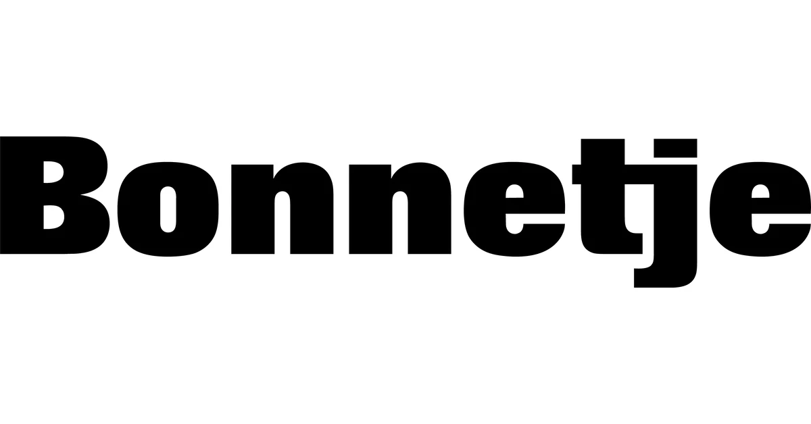
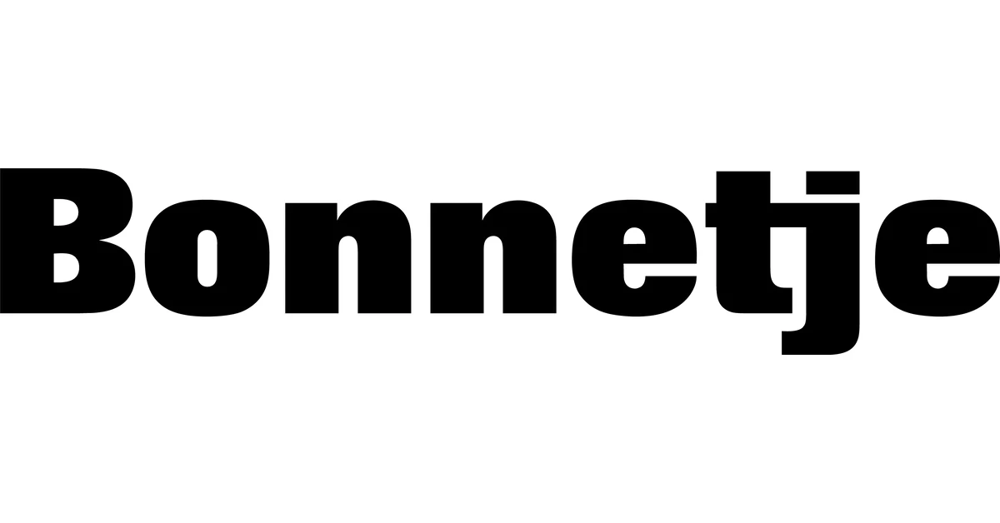

ANNA MYNTEKÆR & YOKO MAJA RAHBEK
 

“First and foremost, we want to deliver good design and create something we are proud of. In addition, we want to help change the industry in terms of sustainability, working conditions, and inclusion.” -- Yoko Maja Rahbek --
DAY 1 | 15:00 | Lokomotivværkstedet
Bonnetje is a Copenhagen-based fashion brand founded in 2021 by Anna Myntekaer and Yoko Maja Rahbek, both graduates of the Gerrit Rietveld Academie in Amsterdam. The designers share a vision of redefining luxury through sustainability, transforming old suits and existing garments into new, feminine silhouettes. Their work merges precise tailoring with a playful, deconstructed aesthetic that challenges traditional ideas of menswear.

Website
TikTok
ANNE SOFIE MADSEN

"Romanticism-romance. Light and dark sides. There's always something otherworldly. Maybe it's also to do with being Danish - being a romantic here is in many ways very taboo and I think I've always fought it.” -- Anne Sofie Madsen --
DAY 3 | 13:30 | Lokomotivværkstedet
DAY 4 | 21:00 | Lokomotivværkstedet
Anne Sofie Madsen is a Copenhagen-based fashion designer who founded her eponymous label in 2011. Her designs combine couture craftsmanship with futuristic elements, blending hand-drawn illustration, structure, and storytelling into every piece.Madsen's work reimagines femininity through contrasts: fragility and strength, tradition and innovation. They create a distinct aesthetic rooted in both art and rebellion.
Website
TikTok
FREYJA TAUS & JUHO LEHIÖ

“We hope that more people will learn to look inside a piece of clothing, recognize the feeling of a well-made textile, and understand what it means to create garments with care and intention.” -- Freyja Taus --
DAY 4 | 13:30
CIFF x CPHFW NEWTALENT Showroom
Taus is a Copenhagen-based ready-to-wear and demi-couture studio founded in 2024 by Freyja Taus and Juho Lehiö. Rooted in craftsmanship and slowness, the label approaches fashion not as mere novelty but as a dialogue between past and present, object and body, maker and wearer. Taus creates garments that carry weight, employing a made-to-order and bespoke model to reduce waste and preserve intimacy of craft.

Website
TikTok
LAURA TØNDER

“I wanted Kettel Atelier to be for girls like me, I am creating my dream pieces. The ones I see myself wearing and styling. It has to feel like it is a little piece of me somehow.” -- Laura Tønder --
DAY 2 | 16:30
CIFF x CPHFW NEWTALENT Showroom
Kettel Atelier is a Copenhagen-based fashion brand founded by designer Laura Tønder. The label explores the relationship between craftsmanship and circular design, creating garments from recycled and renewable materials with a focus on longevity. Blending minimalism with tactile experimentation, Kettel Atelier redefines modern luxury through conscious production and refined, sculptural silhouettes.

Website
TikTok
SARAH BRUNNHUBER

“I make garments that tell a production story: it's about creating value around the creation process by telling it in an engaging way.” -- Sarah Brunnhuber --
DAY 3 | 18:00
CIFF x CPHFW NEWTALENT Showroom
STEM is a Copenhagen-based fashion brand, founded in 2021 by textile designer Sarah Brunnhuber. The label pioneers a zero-waste woven-garment system, where pattern pieces are woven, cut and sewn in a way that eliminates traditional off-cut waste. Blending craft-technique with design, STEM uses recycled natural fibres and creates garments that explicitly reveal their making, challenging the fast-fashion loop.

Website
TikTok